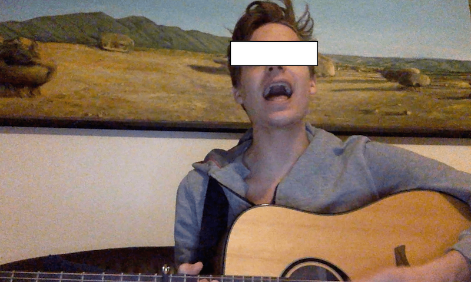
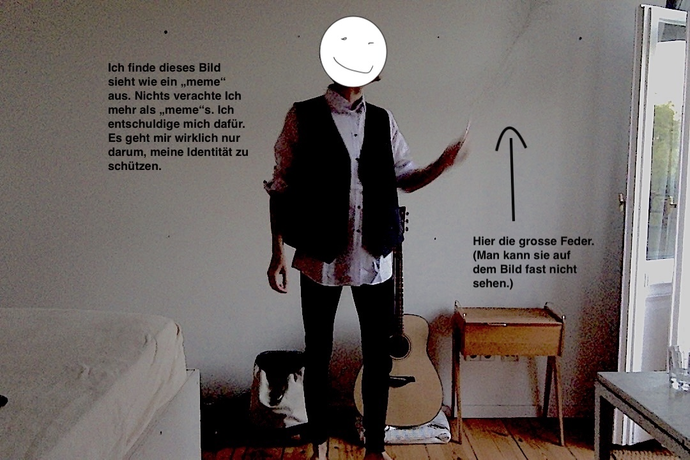
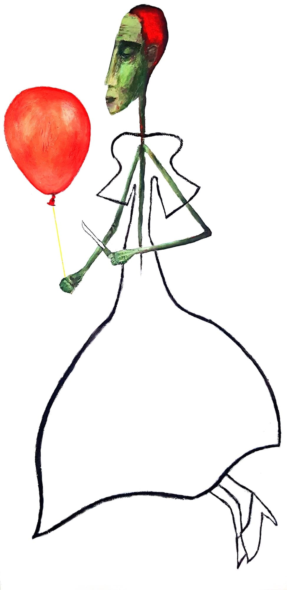

Als Kind baute ich einen Roboter.

Ich war ein cooler Windsurfer.
Als Jugendlicher habe ich viel gesungen.

Das Bild im Hintergrund ist ausgesprochen schön. Es ist von einem Landschaftsmaler gemalt, der nicht von Fotos malt, sondern sich tatsächlich in die Landschaft setzt. Es ist ein teures Bild. Ich befinde mich hier in der Wohnung von der Tochter des Künstlers. Ich durfte die Wohnung einen Monat hüten,um auf die Katze aufzupassen. Ausversehlich schlich die Katze morgens beim Anziehen in den Kleierschrank. Abends sprang sie mir entgegen. Ich war leider nicht mehr Jugendlich als ich gesungen habe (das Bild verbirgt es nicht), ich war schon etwas älter.
Ich habe Theater gespielt.

Ich sprach bei Schauspielschulen vor (man sagt „Vorsprechen“, wenn man sich an Schauspielschulen für einen Platz bewirbt. Normalerweise werden von 700–1000 Vorsprechenden nur 10 genommen. Die 10, die genommen werden, gelten in der Vorsprechenden-Szene als extrem cool und sind es auch, denn es ist ihnen egal, was die Menschen von ihnen denken. Sie sind locker.).
Bei meinem allerersten Vorsprechen entschied ich mich für einen klassischen Monolog von Friedrich Schiller, bei dem ich einen Herrn „Rattengift“ spielte. Ich trug dazu eine enge Strumpfhose, eine klassische Weste und hielt eine grosse Pfauenfeder in der Hand.
Nach der Aufführung stellten mir die Prüfer folgende Frage: „Haben Sie schon einmal ein Theaterstück oder einen Film geschaut?“ Sie sagten nichts weiter und warteten, bis ich begriff, dass es sich bei dieser Frage nicht um eine Frage handelte. Aber auch nachdem ich begriff, sagten sie nichts weiter und warteten, bis ich ohne Aufforderung den Prüfungsraum verlassen würde.
„Rattengift“ war ein erfolgloser Schriftsteller, der plötzlich die Idee hatte, über seine Ideenlosigkeit zu schreiben, und überzeugt war, dass er dafür grossen Ruhm ernten würde.
Ich habe Elektrotechnik studiert.
Es ist schon ziemlich peinlich, ein Diplom von sich ins Internet zu stellen. Aber es ist nicht lange her, da hängte man Diplome bei sich zu Hause auf. Warum dieses also nicht an den Anfang der Geschichte stellen?
„An den Anfang der Geschichte“ klingt, als stehe eine lange Geschichte bevor. Die Geschichte ist bereits fast zu Ende. Vielleicht auch nicht. Aber ich fürchte mich davor. Das Risiko ist sehr gross.
Ich habe viel gemalt.

Ich liebe dieses Bild. Ursprünglich war es so:

Ich bin froh habe ich es übermalt.
Zusätzlich studierte ich Philosophie, Geschichte und Psychologie. Ich will keine weiteren Diplome anfügen, das wäre übertrieben. Ich bin ein Universalgelehrter.
Es ist etwas widersprüchlich, dass ich so darum bemüht bin, meine Identität zu verhüllen, wo die Leser dieser Webseite nur aus meinen besten Freunden und meiner Familie bestehen. Vielleicht wird sich das noch ändern. Vielleicht nicht. Aber auch vor ihnen ist es mir lieber, dass meine Identität hier verhüllt bleibt. Vielleicht sogar noch viel wichtiger als bei allen anderen. Denn ich bin der Meinung, diese Webseite hat nur zum Teil mit mir persönlich zu tun. Sie würden auf eine falsche Fährte gelockt werden. Ich weiss, das klingt widersprüchlich, wo man soeben lauter Fakten über mich gehört hat. Wahrscheinlich wirkt es, als würde ich so tun wollen, als drehe ich mich nicht nur um mich. Verständlich.
In diesem Kontext frage ich mich, ob es wirklich Sinn macht, pornografische Inhalte auf dieser Webseite zu teilen. Alle wären unangenehm berührt. Ich werde euch warnen, bevor es so weit ist, damit man noch wegklicken kann. Es ist eure Schuld, wenn ihr es nicht tut.